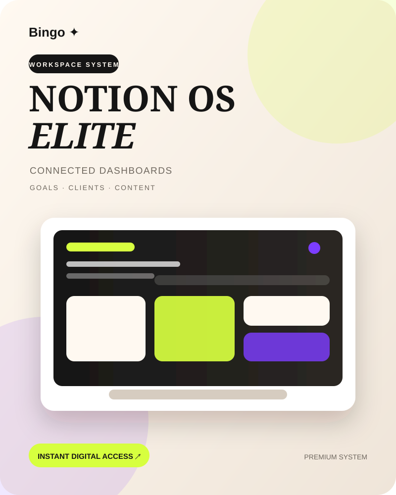

Choose a focused digital system around the workflow you want to improve. Gippi products combine practical structure, premium visual design and organized digital delivery.
 Life OS ElitePremium digital planner and printable life system for annual, monthly, weekly and daily planning, goals, habits, finance, wellness and home organization.$19
Life OS ElitePremium digital planner and printable life system for annual, monthly, weekly and daily planning, goals, habits, finance, wellness and home organization.$19
Notion OS EliteConnected Notion productivity and business template for projects, tasks, goals, clients, CRM, content, notes, subscriptions and weekly reviews.$19